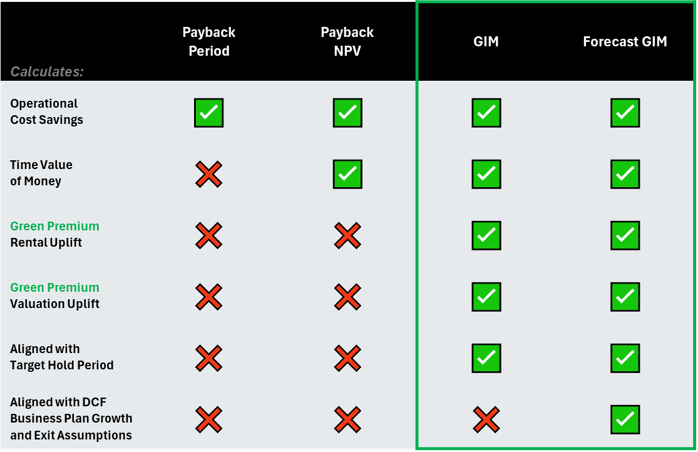
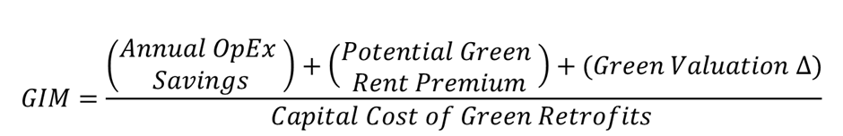
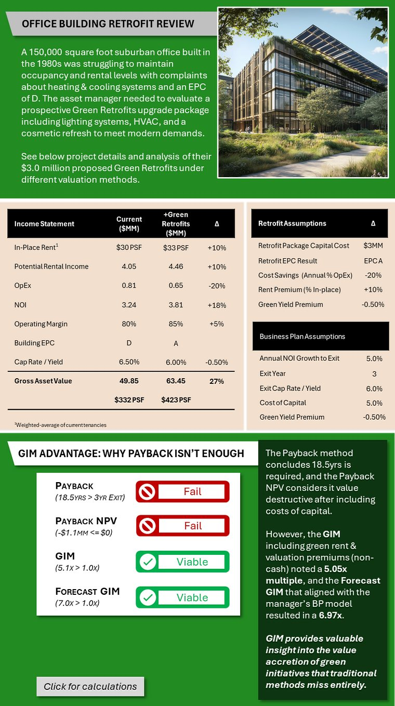

Primer: The Green Impact Multiple (GIM) ©
Rethinking Payback: How do green retrofit returns align with opportunistic strategies?
For decades, sustainability in commercial real estate has been viewed as a long-term value play, with operational savings gradually justifying the cost of retrofits. But in today’s market, where regulatory pressure and tenant demand for green buildings has intensified, sustainability has become a critical driver of near-term asset performance and liquidity. Investors now face a pressing challenge: how to quantify the full spectrum of returns from green retrofits - spanning operational efficiencies, tenant premiums, and valuation uplifts - within the context of dynamic hold periods and exit strategies.
Traditional metrics like payback periods or net present value (NPV) were never designed to capture the complexity of these returns. They ignore rent premiums, overlook valuation dynamics, and often fail to align with the shorter time horizons of value-add investment strategies. To fill this gap, the Green Impact Multiple (GIM) offers a fresh perspective, and one that provides a holistic view of financial returns while remaining firmly anchored to the realities of institutional investing.
Why Traditional ROI Metrics Fail in Green Retrofits
For many investors, the Payback Period has long been the default tool for evaluating retrofit ROI. By dividing the capital cost of a project by its annual energy savings, the payback period tells us how many years it will take for the retrofit to “pay for itself.” While intuitive, this metric ignores other indirect sources of value creation and doesn’t consider the time value of money.
Similarly, incorporating NPV accounts for the time-value of future savings but remains incomplete in fully justifying capital projects. This approach still focuses narrowly on cash flow savings, leaving broader benefits (like tenant demand for higher quality and green-certified spaces) unaccounted for.
In short, traditional metrics fall short of capturing the multifaceted value created by green retrofits. While these metrics provide some clarity, they miss the multi-dimensional value modern investors require, making GIM an essential evolution.

The Green Impact Multiple (GIM): A Holistic Framework
The Green Impact Multiple (GIM), developed within the Ledger Carbon Model, bridges this gap by integrating all key drivers of value - operational cost savings, rent premiums, and valuation uplift - into a single, investment-aligned metric. Unlike traditional measures, GIM reflects the actual duration over which returns are realized, tailoring the analysis to an investor’s specific investment periods.
The GIM Formula
At its core, the GIM is defined as:

Each component represents a critical dimension of green retrofit value:
- Operational Cost Savings: Green retrofits reduce energy use and maintenance costs, generating measurable savings that can be scaled to an investor’s hold period and discounted for time value.
- Rent Premium: Modern market trends have demonstrated that sustainable buildings command higher rents, as tenants prioritize ESG compliance and lower operational expenses. These premiums have become a key value driver, particularly in supply-constrained rental markets.
- Valuation Uplift: Green certifications and improved sustainability credentials are strongly correlated to enhanced property valuations. This uplift is driven by both NOI growth and cap rate compression, as buyers and lenders attach greater value to sustainable assets and lower required returns accordingly.
For a detailed breakdown of the GIM formula, refer to the white paper.
By combining these components, GIM offers a complete picture of the returns from green retrofits, one that reflects both immediate and long-term impacts. The resulting multiple represents the ROI of a given retrofit investment package that considers both cash and non-cash value elements, factors that are often difficult to isolate within a broader business plan.
Aligning GIM with Investor Strategies
Investors have different goals depending on their hold period, exit strategy, and financing structure. To accommodate these variations, GIM can be applied in two ways:
| Metric | Best Use Case | Key Feature |
|---|---|---|
| GIM | Short-term strategies (e.g., refinance, equity extraction) | Captures valuation uplift immediately after retrofit |
| Forecast GIM | Longer-term holds & market-driven exits | Adjusts valuation uplift based on exit timing & market conditions |
For example:
- A value-add investor planning a 3-year hold may prioritize GIM because it captures immediate valuation uplift post-retrofit.
- A core investor holding for 10+ years may prefer Forecast GIM, as it reflects long-term appreciation tied to market dynamics.

The standard GIM calculation highlights the potential upside of a green retrofit, while the Forecast GIM offers a more tailored view aligned with investor assumptions.
How GIM Unlocks Hidden Value for Investors
- Comprehensive Value Assessment: GIM quantifies all sources of green retrofit returns, from operational savings to rent premiums and valuation uplifts.
- Investor-Centric Design: By aligning with the hold period, GIM provides a custom framework for assessing returns in the context of an investor’s timeline and exit strategy.
- Broad Applicability: GIM works across asset types and geographies and integrates with modern financing instruments (based on similar contingent value principles as Sustainability-Linked Loans (SLLs) and green bonds) offering investors a robust tool for communicating ROI to stakeholders.
Unlocking the Full Potential of Green Retrofits
In an era where sustainability is central to investment strategy, the Green Impact Multiple (GIM) - developed by Leaf & Ledger within the Ledger Carbon Model - equips real estate professionals with a powerful tool to assess the true value of green retrofits. By moving beyond narrow metrics like payback periods and NPV payback, GIM provides a holistic, investment-aligned perspective that accounts for all key drivers of value.
Whether it’s helping investors align green retrofits with short-term hold periods or enabling smarter long-term decisions, GIM is more than a metric, it’s a proprietary toolset designed to help investors translate retrofit execution into tangible financial outperformance.
The Green Impact Multiple (GIM) is a proprietary framework developed by Leaf & Ledger as part of the Ledger Carbon Model. © 2025 Leaf & Ledger. All rights reserved.